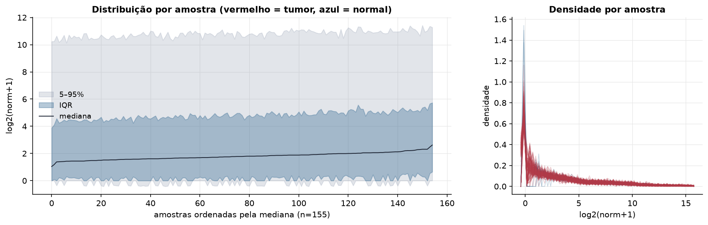
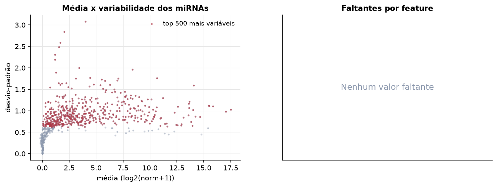
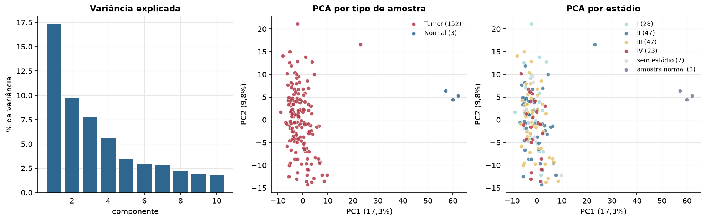
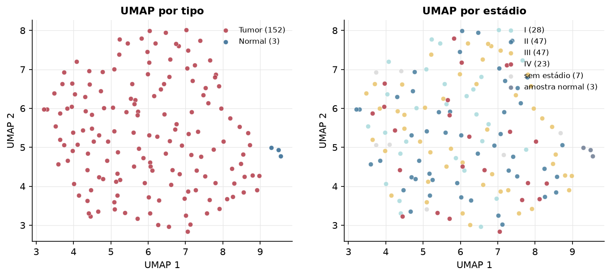
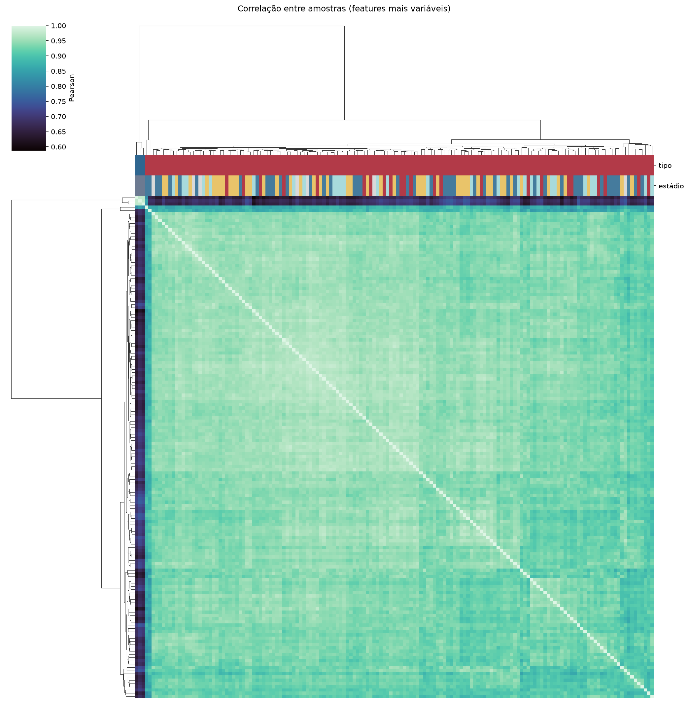
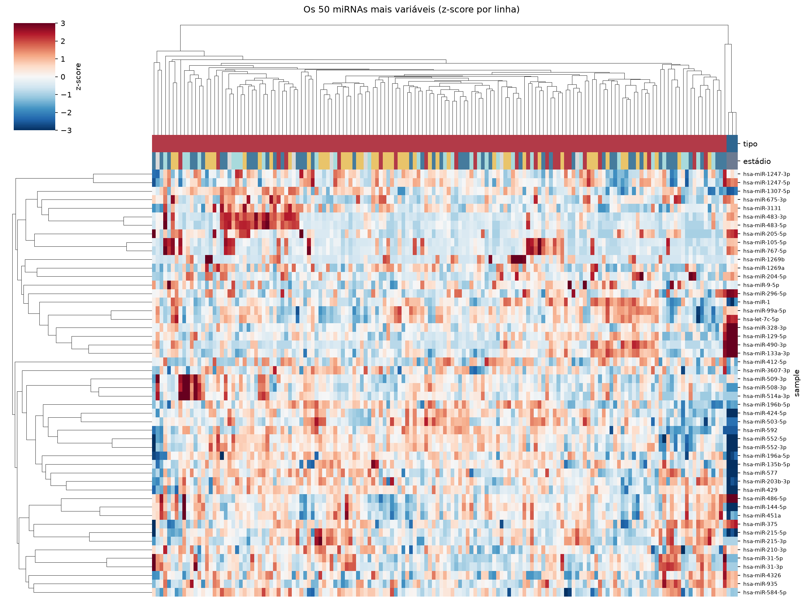
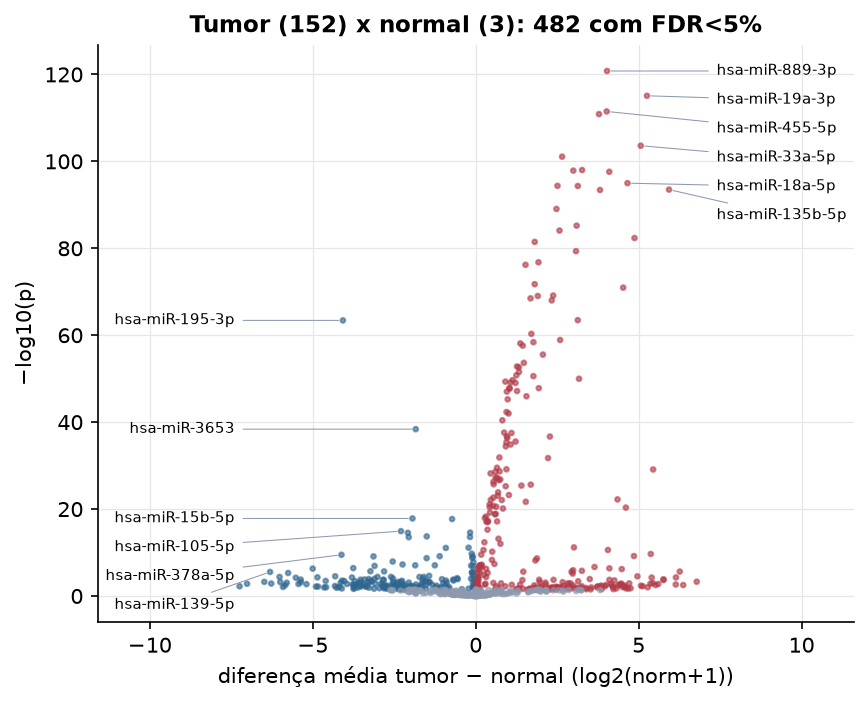
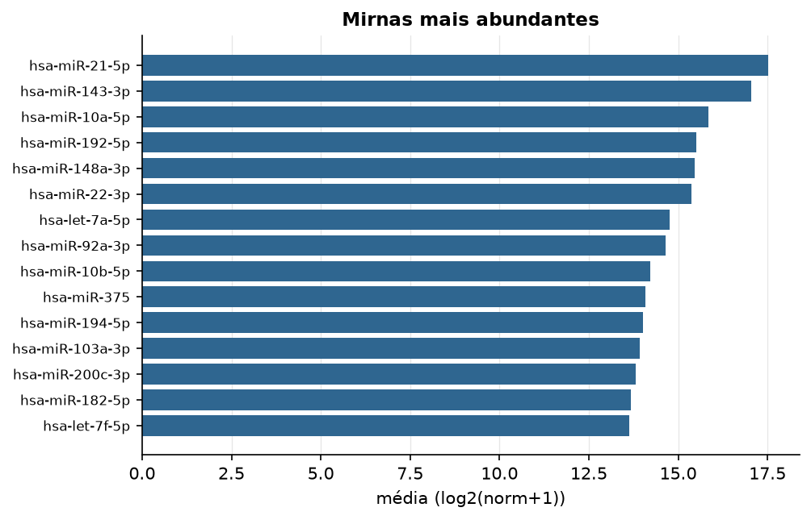

READ · miRNA-seq (PanCanAtlas)
miRNA maduro, normalizado e corrigido por lote (EB), log2(x+1) · gerado em 22/10/2026 03:30
743miRNAs
152amostras tumorais
3amostras normais
0,0%valores faltantes
Fonte: PanCanAtlas (pancanMiRs_EBadjOnProtocolPlatformWithoutRepsWithUnCorrectMiRs_08_04_16.xena)
Fita madura (5p/3p) já normalizada. As contagens brutas por precursor estão no relatório de contagens.
Principais resultados
- 743 miRNAs medidos em 155 amostras (152 tumorais e 3 normais); 0,0% dos valores estão faltando.
- Os dois primeiros componentes principais explicam 17,3% e 9,8% da variância das features mais variáveis.
- Correlação mediana entre amostras: 0,94.
- Amostras com correlação muito abaixo das demais (possíveis outliers técnicos): TCGA-DT-5265-01, TCGA-AF-2689-11, TCGA-AF-2691-11, TCGA-AF-2692-11, TCGA-AG-3575-01.
- Tumor x normal: 482 miRNAs diferentes com FDR < 5% (283 maiores no tumor, 199 maiores no normal; 3 pacientes têm o par tumor-normal).
- Mais aumentados no tumor: hsa-miR-889-3p, hsa-miR-19a-3p, hsa-miR-455-5p, hsa-miR-590-5p, hsa-miR-33a-5p, hsa-miR-628-5p, hsa-miR-411-5p, hsa-miR-454-3p.
- Mais reduzidos no tumor: hsa-miR-195-3p, hsa-miR-3653, hsa-miR-15b-5p, hsa-miR-500a-3p, hsa-miR-105-5p, hsa-miR-3681-5p, hsa-miR-3615, hsa-miR-181a-2-3p.
- Associações clínicas com p < 0,05 nos componentes principais: PC2 com idade (p=0.0055).
Distribuição dos valores


Estrutura das amostras




Tumor x normal

Features mais diferentes entre tumor e normal
| sample | diferenca_tumor_menos_normal | t | p | fdr |
|---|---|---|---|---|
| hsa-miR-889-3p | 4.029 | 75.138 | 1.62e-121 | 1.18e-118 |
| hsa-miR-19a-3p | 5.254 | 68.712 | 8.07e-116 | 2.95e-113 |
| hsa-miR-455-5p | 4.018 | 64.911 | 3.29e-112 | 8.02e-110 |
| hsa-miR-590-5p | 3.783 | 64.286 | 1.35e-111 | 2.46e-109 |
| hsa-miR-33a-5p | 5.064 | 57.282 | 2.5e-104 | 3.66e-102 |
| hsa-miR-628-5p | 2.651 | 55.025 | 8.22e-102 | 1e-99 |
| hsa-miR-411-5p | 3.265 | 52.373 | 9.86e-99 | 1.03e-96 |
| hsa-miR-454-3p | 2.995 | 52.259 | 1.35e-98 | 1.23e-96 |
| hsa-miR-20a-3p | 4.099 | 52.037 | 2.48e-98 | 2.01e-96 |
| hsa-miR-18a-5p | 4.657 | 49.882 | 1.04e-95 | 7.58e-94 |
| hsa-miR-590-3p | 2.509 | 49.391 | 4.24e-95 | 2.79e-93 |
| hsa-miR-450b-5p | 3.133 | 49.364 | 4.58e-95 | 2.79e-93 |
| hsa-miR-135b-5p | 5.932 | 48.699 | 3.15e-94 | 1.77e-92 |
| hsa-miR-3613-5p | 3.813 | 48.631 | 3.84e-94 | 2.01e-92 |
| hsa-miR-190a-5p | 2.477 | 45.294 | 8.88e-90 | 4.33e-88 |
| hsa-miR-181b-3p | 3.096 | 42.524 | 6.13e-86 | 2.8e-84 |
| hsa-miR-193a-3p | 2.571 | 41.736 | 8.31e-85 | 3.57e-83 |
| hsa-miR-577 | 4.873 | 40.565 | 4.3e-83 | 1.75e-81 |
| hsa-let-7f-1-3p | 1.81 | 39.967 | 3.35e-82 | 1.29e-80 |
| hsa-miR-222-5p | 3.077 | 38.567 | 4.54e-80 | 1.66e-78 |
| hsa-miR-26a-2-3p | 1.926 | 36.935 | 1.67e-77 | 5.81e-76 |
| hsa-miR-3913-5p | 1.528 | 36.573 | 6.34e-77 | 2.11e-75 |
| hsa-miR-374b-3p | 1.809 | 33.887 | 1.84e-72 | 5.86e-71 |
| hsa-miR-592 | 4.525 | 33.43 | 1.13e-71 | 3.43e-70 |
| hsa-miR-421 | 2.377 | 32.39 | 7.44e-70 | 2.18e-68 |
| hsa-miR-651-5p | 1.904 | 32.336 | 9.3e-70 | 2.62e-68 |
| hsa-miR-148b-5p | 1.682 | 32.026 | 3.31e-69 | 8.96e-68 |
| hsa-miR-188-5p | 2.332 | 31.768 | 9.58e-69 | 2.5e-67 |
| hsa-miR-503-5p | 3.13 | 29.309 | 3.4e-64 | 8.58e-63 |
| hsa-miR-195-3p | -4.076 | -64.59 | 3.89e-64 | 9.49e-63 |
Associação com variáveis clínicas
p-valores da associação dos três primeiros componentes principais (só tumores) com estádio (Kruskal-Wallis), sexo (Mann-Whitney), idade (Spearman) e sobrevida global (Cox univariado).
| estádio (Kruskal) | sexo (Mann-Whitney) | idade (Spearman) | sobrevida OS (Cox) | |
|---|---|---|---|---|
| PC1 (11,6%) | 0.333 | 0.316 | 0.129 | 0.518 |
| PC2 (9,6%) | 0.735 | 0.269 | 0.005 | 0.439 |
| PC3 (6,8%) | 0.336 | 0.957 | 0.501 | 0.557 |
Mais abundantes
